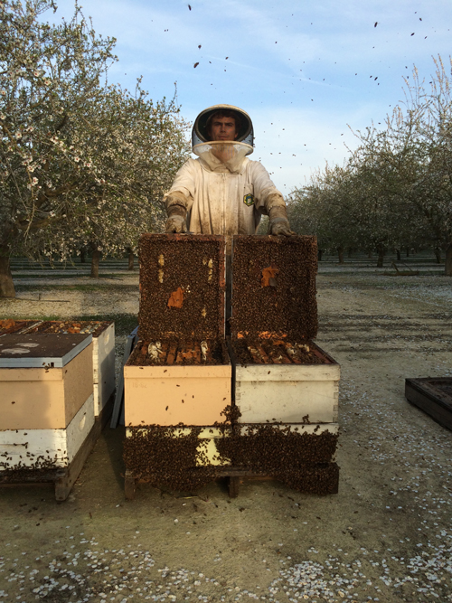

Since the early 1980's, San Marcos Farms has been dedicated to bringing the finest quality honey and beehive products to our customers. Our varietal honey's are sustainably produced using natural beekeeping methods. The honey is harvested and processed at a low temperature to preserve delicate enzymes and nutrients. Our products can be found at the Santa Barbara farmers markets, local retail grocers, and area farm stands.

History of the Company
Many people ask, "How did you get into keeping bees and selling honey?" The answer goes back to a desire to produce good food for our community in a way that is gentle on the earth and it's resources. The owners, Don and Anne Cole, merged their skills and interests to create San Marcos Farms. Don had some experience beekeeping with his dad, Wally. They purchased a small bee supply company on the Mesa called Lenn's Bee Service, which they ran out of their garage. Anne came from a background at UCSB, studying Environmental Studies and Geography. Anne was also interested in nutrition, botany, and was involved in organic farming. In the early days, Don and Anne operated an organic produce stand on Hollister Avenue. They sold honey from Don's hives as well as locally grown organic produce. Since then, they have expanded their beekeeping business, with the help of their two sons, Jesse and Elias, as well as many dedicated employees along the way.